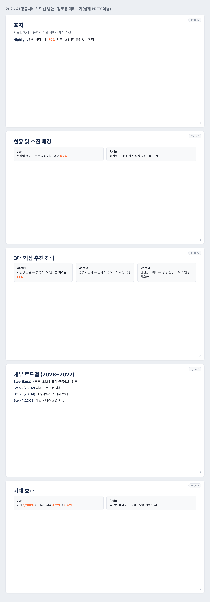

AI 디자인 에이전트로 PPT 슬라이드 만들기 — 취향 명세서와 워크플로우
“이 내용으로 예쁜 슬라이드 만들어줘”라고만 하면, AI는 제어하기 쉬운 두세 가지 패턴만 반복하고 ‘A가 아니라 B입니다’ 같은 진부한 문체를 남발합니다. 수준 높은 슬라이드를 꾸준히 뽑으려면, 단발성 프롬프트 대신 취향 명세서(디자인.md)와 역할을 나눈 워크플로우가 필요합니다. 이 편은 그 방법을, 가상의 실전 시나리오와 직접 돌려 본 점검 도구로 초보자도 따라 하기 쉽게 단계별로 보여 줍니다.
스타일은 ‘명세서’로 고정하고, 검수는 ‘품질(객관)’과 ‘취향(스타일)’으로 나눠서 — 그래야 AI 슬라이드가 매번 비슷한 품질로 나옵니다.
핵심은 세 가지입니다. ① 우수 레퍼런스에서 취향 명세서(디자인.md)를 뽑아 스타일을 재현 가능하게 만들고, ② 본문을 그 명세서대로 슬라이드 개요로 만들고, ③ 품질 게이트(Pass/Fail) + 비주얼 QA 루프로 거른 뒤 사람이 리터치합니다.
01전체 구조 — 순차 · 병렬 · 루프
슬라이드 제작을 한 번의 요청이 아니라, 역할을 나눈 세 묶음의 흐름으로 봅니다.
우수 레퍼런스 → 디자인.md 명세서
본문을 챕터로 나눠 Type 섞어 생성 → 통합
품질 게이트(Pass/Fail) + 비주얼 QA → 재작업
게이트 통과 개요만 발표 자료로
02품질과 취향 나누기 — 검수의 기본
검수를 잘하려면 객관적인 것과 정답 없는 스타일을 섞지 않아야 합니다. 섞으면 기준이 흐려집니다.
| 품질 게이트(Quality) | 취향 루브릭(Taste) | |
|---|---|---|
| 정의 | 최소 기준 통과 여부를 객관 검수 | 정답 없는 스타일·맥락 가이드 |
| 판정 | Pass / Fail | 재현도 평가(디자인.md 기준) |
| 대상 | 맞춤법·어문, 사실관계(수치), 요구사항, 청중, 출처 | 레이아웃 다양성, 강약 전개, 색 절제, 폰트 비율, 정보 밀도 |
| 누가 | 도구로 일부 자동(slide_lint.py) | 사람 + 비주얼 QA(deck_html.py 미리보기) |
03처음 접근과 바뀐 점
디자인.md로 뽑아 주면, 다른 주제에도 같은 스타일이 재현됩니다(재현성, Robustness).04실전 3단계 — 가상 시나리오로
가상 시나리오로 흐름을 따라가 봅니다. 레퍼런스: 사람이 만든 우수 공공 PPT. 주제: 「2026 AI 기반 공공서비스 혁신 방안」(본문.md).
- 1단계 · 취향 명세서 추출 — 레퍼런스를 분석해
디자인.md(컬러·폰트 비율·레이아웃 Type·강약·밀도)를 뽑습니다. 프롬프트는 01-extract-taste.md. - 2단계 · 개요 생성 —
본문.md+디자인.md를 함께 주고, Type을 섞은 5장 개요를 만듭니다. 프롬프트는 02-generate-slides.md. - 3단계 · 검수 루프 — 품질 게이트(03)와 비주얼 QA(04)로 거르고, 사람 리터치를 명세서에 반영(05)합니다.
# 디자인.md 를 적용해 만든 슬라이드 개요(일부) — sample/발표자료_초안.md # [Slide 1] 표지 - Layout: Type D ← 중앙 대형 메시지 - Highlight: 민원 처리 시간 70% 단축 | 24시간 끊김없는 행정 # [Slide 3] 3대 핵심 추진 전략 - Layout: Type C ← 상단 수치 + 하단 설명 박스 - Card 1: 지능형 민원 — 챗봇 24/7 원스톱(처리율 85%) - Card 2: 행정 자동화 — 문서 요약·보고서 자동 작성 - Card 3: 안전한 데이터 — 공공 전용 LLM·개인정보 암호화
Layout: Type X를 명시하면, 생성·검수·렌더가 모두 그 구조를 따라갑니다. 수치는 반드시 본문.md에 있는 값만 씁니다.05디자인 에이전트 워크플로우 — 역할 나누기
한 에이전트에 다 맡기지 않고, 조직처럼 역할을 나눕니다.
| 에이전트 | 구조 | 역할 |
|---|---|---|
| 취향 추출 | 순차 | 레퍼런스 → 디자인.md 명세서 자동 추출 |
| 슬라이드 생성 | 병렬 | 본문을 챕터로 나눠 여러 에이전트가 동시에 제작 → 통합 |
| 품질 검수 | 루프 | 오탈자·사실관계·요구사항을 Pass/Fail 판정 |
| 비주얼 QA | 루프 | 렌더된 화면의 글자 겹침·줄바꿈·여백 쏠림을 눈으로 감지→수정 |
| 사람(Human-in-the-loop) | — | 최종 리터치, 그 차이를 명세서에 반영해 고도화 |
디자인.md를 참조하므로 스타일이 흐트러지지 않습니다. 검수는 루프라 미통과 시 자동으로 재작업을 돕습니다.06도구로 검수 — 직접 돌린 결과
동봉한 두 도구(표준 라이브러리)로 검수 루프를 실제로 돌려 봤습니다.
① 품질 게이트 — 본문에 없는 수치를 잡음(전 → 후)
$ python tools/slide_lint.py sample/발표자료_초안.md --slides 5 \
--require "3대,로드맵,기대 효과" --body sample/본문.md --design sample/디자인.md
[전] 판정: 미통과
| FAIL | 사실관계(본문에 없는 수치) | 본문에 없음: 2027 | ← 로드맵 '2026~2027'의 2027이 본문에 없었음
[후] 본문에 종료연도를 명시 → 판정: 통과 (4개 게이트 PASS)② 비주얼 QA — 미리보기를 렌더해 눈으로 확인
deck_html.py로 개요를 검토용 미리보기로 렌더했습니다. 처음엔 제목이 본문 행으로 한 번 더 중복 표시되는 결함이 비주얼 QA에서 보여, 도구를 고쳐 바로잡았습니다(아래는 수정 후).

.pptx로 내려받으면 됩니다(게이트 통과 개요만).07Antigravity와 Claude Code, 그리고 여러 도구
두 도구 모두 에이전트로 슬라이드 작업을 돕지만 강점이 다릅니다. 역할을 나눠 쓰면 좋습니다.
| 구분 | Antigravity | Claude Code |
|---|---|---|
| 속도·가성비 | 빠르고 가볍게(CLI/데스크톱). 초안·구조 잡기에 강함 | 상위 모델 기반으로 신중·정교. 상대적으로 느림 |
| 비주얼 QA | Gemini 계열 멀티모달로 시각 인식에 강함 | 렌더 후 겹침·줄바꿈을 확인하고 수정 지시 |
| 디자인 재현 | 빠른 초안엔 유용, 다양성은 단순할 수 있음 | 레퍼런스 레이아웃을 정교하게 재현 |
| 추천 | 구조 분석·빠른 초안(입문·실습) | 발표용 고급 슬라이드 완성 |
.pptx를 만들고, Copilot은 PowerPoint 안에서, Gemini는 Workspace에서 돕습니다. Antigravity 구축법과 도구별 대응표는 platforms.md와 16편을 참고하세요. 모델 제품·버전명은 자주 바뀌니 ‘비주얼 인식이 강한 최신 모델’처럼 역할로 기억합니다.08주의할 점
| 상황 | 이렇게 |
|---|---|
| 막연한 “예쁘게” | 우수 레퍼런스에서 디자인.md를 뽑아 스타일을 명세한다. |
| 품질·취향 뒤섞기 | 객관은 Pass/Fail 게이트, 스타일은 루브릭으로 분리. |
| 1차 결과 그대로 사용 | 품질 게이트 + 비주얼 QA 루프 후 사람이 리터치. |
| 단조로운 표 반복 | 레이아웃 Type을 섞고, 린터의 ‘쏠림’ 경고를 확인. |
| AI 클리셰 | ‘A가 아니라 B’ 등은 명세서에서 금지, 게이트로 자동 검출. |
| 수치 지어내기 | 본문에 있는 값만. 린터가 본문에 없는 수치를 짚는다. |
| 레퍼런스 저작권·개인정보 | 출처 확인, 민감·내부 문서는 올리기 전 제거·가명화. |
| 개인 서버 경유 | 불명의 중계 서버 금지. 공식·직접·로컬 우선. |
| 모델 버전명 외우기 | 자주 바뀜. ‘역할’로 기억(비주얼 인식·정교한 재현 등). |
부록출처
모두 2026. 11. 8. 확인. 이 편은 유튜브 링크가 제공되지 않아 영상 자료는 쓰지 않았습니다.
- TechCrunch, Google Antigravity 2.0 출시(데스크톱 앱·CLI) · Google I/O 2026 발표
- Anthropic, Claude 지원 센터 (Slides로 .pptx 내보내기·파일 작업)
- 작성자 원고 「AI 디자인 에이전트와 워크플로우를 활용한 PPT 슬라이드 제작법」의 방법론(품질/취향 분리, 취향 명세서, 순차·병렬·루프 워크플로우)과, 동봉한 두 도구(
slide_lint.py·deck_html.py)를 직접 만들어 시험(9+5)·가상 시나리오로 검증.
함께 읽기: 16편 Antigravity · 18편 윤문 스킬 · 23편 Claude 마스터